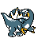

#322
Arctibax
DragonIce
Abilities: Thermal Exchange, Thermal Exchange, Ice Body
Base stats BST 423
HP90
Attack95
Defense66
Speed62
Sp. Atk45
Sp. Def65
Evolution
dbbw EVOLVE_LEVEL, 45, BAXCALIBURLevel-up learnset
LevelMoveType
Lv. 1TackleNormal
Lv. 1LeerNormal
Lv. 6Icy WindIce
Lv. 12DragonbreathDragon
Lv. 18Focus EnergyNormal
Lv. 24BiteDark
Lv. 29Ice FangIce
Lv. 40Take DownNormal
Lv. 45Ice BeamIce
Lv. 50CrunchDark
Lv. 55Icicle CrashIce